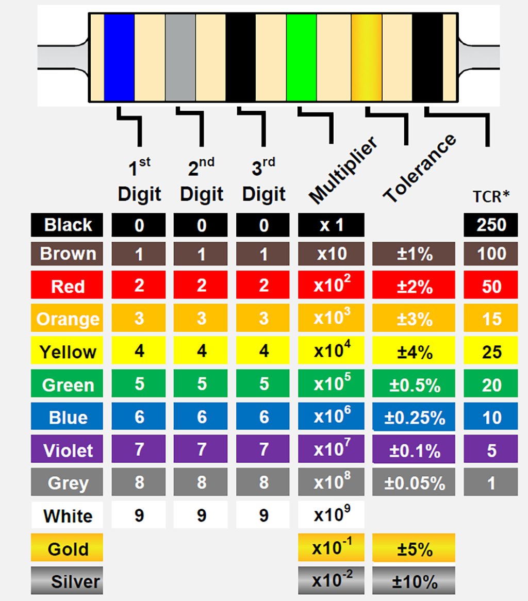

Electronic color codes
An electronic color code is used to indicate the values or ratings of electronic components, usually for resistors, but also for capacitors, inductors, diodes and others. A separate code, the 25-pair color code, is used to identify wires in some telecommunications cables. Different codes are used for wire leads on devices such as transformers or in building wiring.
How to calculate
To distinguish left from right there is a gap between the C and D bands:
- The first significant figure of component value (left side)
- The second significant figure (some precision resistors have a third significant figure, and thus five bands).
- The decimal multiplier (number of trailing zeroes, or power of 10 multiplier)
- If present, indicates tolerance of value in percent (no band means 20%)
In the above example, a resistor with bands of red, violet, green, and gold has first digit 2 (red; see table
below), second digit 7 (violet), followed by 5 (green) zeroes: 2700000 ohms. The fourth band is not always present, but when it is, represents tolerance.
This is a percentage by which the resistor value can vary. The gold band in this example indicates a tolerance of ±5%, which can be represented by the letter J.
This means that the value can vary by up to 5% in either direction
Precision resistors may be marked with a five band system, to include three significant digits, a power of
10 multiplier (number of trailing zeroes, and a tolerance band.)
Coded components have at least three bands: two significant figure bands and a multiplier, but there are other possible variations. For example, components that are made to military specifications are typically four-band resistors that may have a fifth band that indicates the reliability of the resistor in terms of failure rate percentage per 1000 hours of service. It is also possible to have a 5th band that is the temperature coefficient, which indicates the change in resistance of the component as a function of ambient temperature in terms of ppm/K.
More commonly, there are five-band resistors that are more precise due to a third significant figure band. This shifts the position of the multiplier and tolerance band into the 4th and 5th position as compared to a typical four-band resistor.
On the most precise of resistors, a 6th band may be present. The first three bands would be the significant figure bands, the 4th the multiplier, the 5th the tolerance, and the 6th could be either reliability or temperature coefficient. There are also other possible variations, but these are some of the more common configurations
An extra-wide first band indicates a wire-wound resistor. Resistors manufactured for military use may also
include a fifth band which indicates component failure rate (reliability).
All coded components have at least two value bands and a multiplier, other bands are optional.